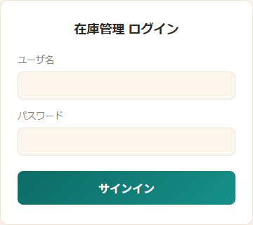
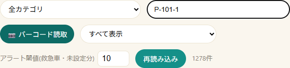
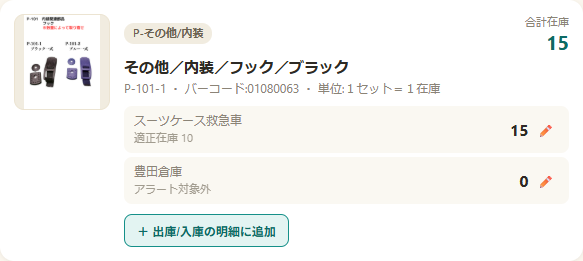
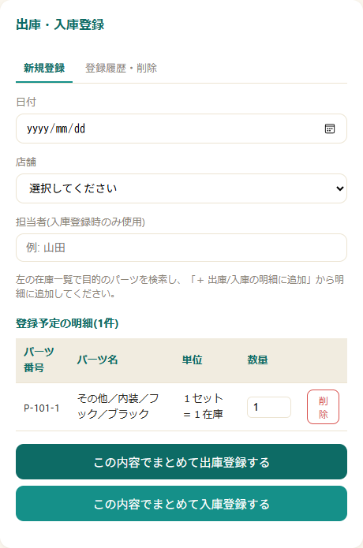
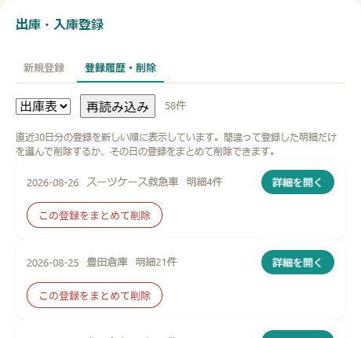
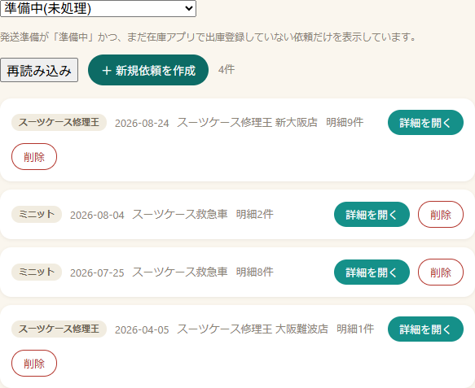
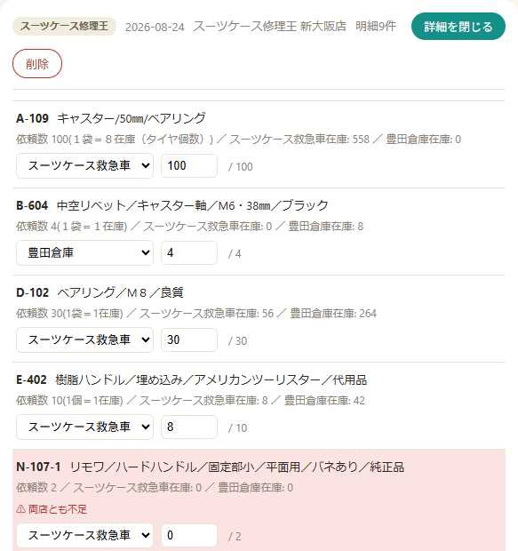
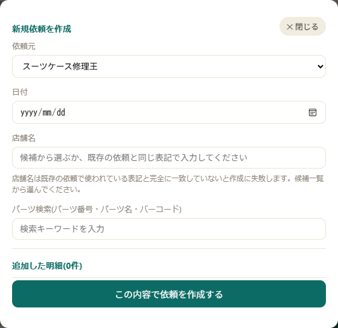
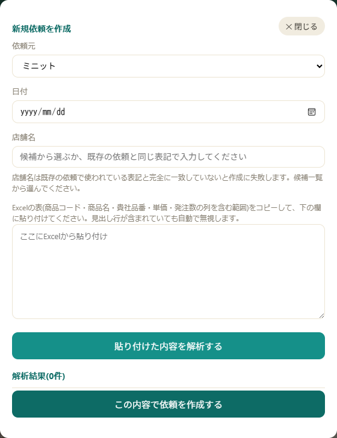

在庫管理・提携店からの依頼処理 スタッフ向け 操作ガイド
「在庫管理アプリ」は、スーツケース救急車・豊田倉庫のパーツ在庫を確認しながら出庫・入庫を記録し、あわせて提携店(スーツケース修理王・ミニット)からのパーツ購入依頼を処理して納品書・請求書を発行するためのツールです。

ログイン画面
ログイン後、最初に表示される画面です。画面上部の「在庫一覧」「提携店からの依頼」の2つのタブで表示を切り替えます。

在庫一覧の検索・絞り込み欄

パーツカード1件分の表示例
パーツを明細に追加すると、PCでは画面右側、スマホでは画面下部の「出庫・入庫を開く」ボタンから登録フォームが開きます。

出庫・入庫登録フォーム(明細を追加した状態)
直近30日分の出庫表・入庫表の登録を新しい順に表示します。

登録履歴・削除の画面
「準備中(未処理)」と「発送済み(処理済み・見直し用)」をドロップダウンで切り替えます。準備中は、発送準備が「準備中」かつ、まだこのアプリで出庫登録していない依頼だけが表示されます。
| 詳細を開く | その依頼の明細を表示する |
|---|---|
| 削除 | 準備中の依頼を削除する(元に戻せません。確認ダイアログが出ます) |

依頼一覧(準備中)の表示例

明細ごとの出庫元・出庫数の選択(ピンク色は「両店とも不足」の例)
出庫登録済みの依頼を読み取り専用で確認できます。明細と、その時に発行した納品書・請求書のPDFを開き直せます。実際の出庫数や不足分の扱いは添付PDFを確認してください(表示されている依頼数は元の依頼数です)。
準備中の依頼だけ「削除」ボタンがあります。確認ダイアログが出るので、内容を確認の上で削除してください(元に戻せません)。
「＋ 新規依頼を作成」ボタンから、依頼元(修理王／ミニット)を選んで作成します。日付と店舗名を入力し(店舗名は入力欄をクリックすると出る候補から選んでください)、「この内容で依頼を作成する」で登録します。
パーツ検索欄からパーツを探し、「＋ 明細に追加」で手動で明細を追加します(数量の変更・削除も可能)。

新規依頼を作成(スーツケース修理王：手動入力)
発注のExcelデータ(商品コード・商品名・貴社品番・単価・発注数の列を含む範囲)をそのままコピーし、貼り付け欄にペーストして「貼り付けた内容を解析する」を押します。見出し行が含まれていても自動で無視されます。

新規依頼を作成(ミニット：Excel貼り付け)